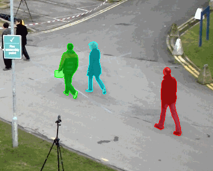
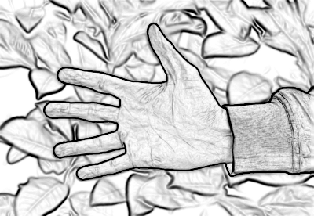
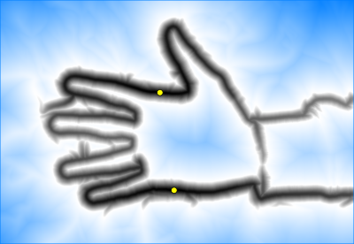
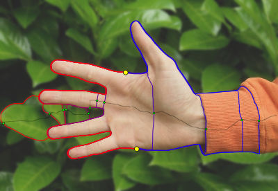

Research
I am particularly interested in image and video analysis, especially object detection, segmentation and tracking using optimization methods.
Joint segmentation and tracking
My research first focuses on joint segmentation and tracking of multiple objects within image sequences. The extraction of moving objects is performed through spatiotemporal segmentation, formulated as an energy minimization problem. The energy to be optimized is designed according to the various assumptions made on spatial and temporal consistency of appearance, shape and motion of objects and background. I am interested in both continuous (variational) optimization using multiple level set functions, as well as discrete labeling problems, related to Markov Random Fields and graph cuts.
 |
 |
Especially, a part of my work deals with the formulation of novel local data terms devoted to region tracking. For example, this can be performed by matching color statistics between successive frames. A common underlying assumption in this context is that color statistics can be confidently estimated in a global manner over object and background regions. This can be a drawback for tracking in real scenes with cluttered backgrounds, where statistical color data is highly scattered, preventing the estimation of reliable color statistics for object/background discrimination. To overcome this limitation, an approach based on a short-sight modeling of background is proposed, which concentrates on the vicinity of tracked objects and thus extract more consistent statistical data for region separation. Related publications are:
J. Mille and J-L. Rose,
Multitarget region tracking based on short-sight modeling of background and color distribution temporal variation,
British Machine Vision Conference (BMVC), Dundee, Scotland, 2011
J. Mille and J-L. Rose,
Region tracking with narrow perception of background,
IEEE International Conference on Image Processing (ICIP), Brussels, Belgique, 2011
Closed contour extraction using minimal paths
Minimum cost paths have been extensively studied tools for image segmentation with prior interaction. Provided a set of user-provided landmark points along the boundary of interest, paths are computed between these points in order to build a closed contour. Optimality is the main advantage of such approaches, since in most cases, a minimum cost path can be efficiently found as the global solution of the corresponding minimization problem, as Dijkstra's algorithm for shortest paths in directed graphs.
A path between two landmark points may be optimal according to the chosen edge-based cost function (the potential), but might turn out irrelevant when assembled with paths emanating from other landmark points to build a closed contour. Given two endpoints, other good paths can be built in addition to the shortest one. These potentially good paths are introduced as admissible paths.
|  | |
|  |  |
Related publications are:
J. Mille, S. Bougleux and L.D. Cohen,
Combination of piecewise-geodesic paths for interactive segmentation,
International Journal of Computer Vision, 2014
J. Mille, S. Bougleux and L.D. Cohen,
Combination of paths for interactive segmentation,
British Machine Vision Conference (BMVC), Bristol, England, 2013
J. Mille, S. Bougleux and L.D. Cohen,
Minimally overlapping paths sets for closed contour extraction,
International Conference on Computer Vision Theory and Applications (VISAPP), Rome, Italy, 2012
Previous work (2004 - 2009)
A summary of my past research performed during my PhD thesis in the Université de Tours and postdoc in the CEREMADE at Université Paris-Dauphine can be found in PDF format here (in french).
Academic projects and platforms
- Projet Jeunes Chercheurs GdR ISIS "Coopération des chemins minimaux et contours actifs polygonaux pour la détection d’objets" (2010-2012). Combination of minimal paths and polygonal (parametric) active contours for object detection. Joint work with Sébastien BOUGLEUX and Laurent COHEN
- ANR project ReVeS (2010-2013). Plant species recognition using image analysis on mobile phones. Constrained segmentation methods with prior knowledge and extraction of specific features devoted to the detection and recognition of tree leaves. Headed by Laure TOUGNE
- IMU project RIVIERE (started in 2013). Bringing city back to nature: assessing risks and well-being. Computer vision and machine learning aspects: supervised full scene labeling of urban scenes shot with a mobile camera endowed with an eye-tracking system. Headed by Marylise COTTET from the EVS lab
- The LIRIS-VISION platform. A set of C++ applications and libraries related to the research in computer vision, machine learning and image processing done at the LIRIS
PhD students and post-docs
Here is my list of co-advised PhD students and post-docs:- Fabien BARADEL. Deep learning for understanding humans: gestures, pose, activities. PhD in progress, started in september 2016, supervised by Christian WOLF
- Rizwan Ahmed KHAN. Supervised full scene labeling of urban scenes shot with a mobile camera endowed with an eye-tracking system. Post-doc in progress, started in october 2013, co-supervised with Christian WOLF
- Aurélie LEBORGNE. Shape analysis: segmentation and feature extraction. Started in september 2012, PhD defended in july 2016, supervised by Laure TOUGNE
- Imtiaz ALI. Object detection in moving backgrounds. Started in october 2008, PhD defended in march 2012, supervised by Laure TOUGNE